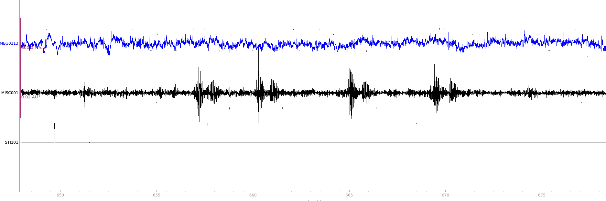

Find the delay of the audio on the MISC channel of an MEG recording
Introduction
The module find_delay was originally created to find a robust way to detect the audio delay during MEG
(magnetoencephalography) experiments. In experiments using audio stimuli, the software (Psychtoolbox, e.g.) sends a
trigger to the MEG acquisition system, and plays the audio to the participant. Among all the neuro-imaging data
recorded, one channel, called the MISC channel, records in real time the audio output from the experiment, and syncs
it to the brain signals.
The triggers, being sent directly from the software to the acquisition machine, do not account for the delay that might occur due to the experiment software or the display hardware. This calls for a correction of the triggers timestamps, so that the proper starting point of each trial can be calculated.
In the image above, one of the MEG channels, the MISC channel (containing the recorded audio) and the STI channel are present. The trigger on the STI channel needs to be corrected and pushed forward to match the moment where the audio actually starts.
Procedure
Using MNE, it is possible to correct the values on the STI channel to correct for the delays, using the function add_events.
To correct for the audio delays, you will need, for each trial, to:
Load your original audio as an array
Isolate the audio on the MISC channel
Run the find_delay function
Save the correct events on the STI channel
Load the original audio
If the audio were WAV:
from scipy import wavfile
path_audio = "path_audio.wav"
wav = wavfile.read(path_audio)
wav_freq = wav[0]
wav_array = wav[1]
# This will allow us to get the duration of the trial if the audio length is not constant
duration = len(wav_array) / wav_freq
In the case where the stimuli are videos, it is possible to use the module moviepy:
from moviepy import VideoFileClip
path_video = "path_video.mp4"
mp4_video = VideoFileClip(path_video)
mp4_audio = mp4_video.audio
audio_array = np.array(list(mp4_audio.iter_frames()))[:, 0]
duration = mp4_video.duration
mp4_video.close()
Other formats may work with other modules, or might need to be converted beforehand.
Isolate the audio on the MISC channel
import mne
# Load the MEG data
meg_data = mne.io.read_raw_fif("path_meg.fif", preload = True, verbose = False)
# Get the events
events = mne.find_events(meg_data, stim_channel = "STI101", shortest_event = 1, verbose = False)
# Get the event matching the first trigger "42" for example
onset = [event for event in events if event[2] == 42][0][0]
offset = onset + duration * meg_data.info["sfreq"] # Beware the sampling rate of your MEG data!
# Correct the onset and offset for the first_samp value of the MEG data
abs_onset = onset[0] - data_original.first_samp
abs_offset = offset[0] - data_original.first_samp
# Create your audio array from the STI channel
meg_audio_array = data_original.pick(["MISC001", "STI101"])[:, abs_onset:abs_offset][0]
Run the find_delay function
For this step, you may need to set remove_average_array_1 to True, as sometimes the average of the STI channel
will not be at 0, resulting in erroneous delay values.
Try to perform your find_delay function on the raw data rather than on downsampled data, as low sampled STI channel
might not allow to detect the delay properly.
Set a low threshold (e.g. 0.1) as the STI channel is generally very noisy.
You can set the output figures in a folder to visually check quickly if the delay is proper for all of your events.
from find_delay import find_delay
delay = find_delay(array_1 = meg_audio_array,
array_2 = wav_array,
freq_array_1 = meg_data.info["sfreq"],
freq_array_2 = wav_freq,
resampling_rate = min(meg_data.info["sfreq"], wav_freq),
return_delay_format = "ms",
threshold = 0.1)
Correct the delay and save the events
Correcting the delays is as simple as replacing the value in the first column of the events array that you can get
from the function mne.find_events. Pay attention to your sampling rate: in the function above the delay is returned
in milliseconds, meaning that if you have a MEG sampling rate different than 1000 Hz, you will need to convert the delay
to samples.
events[0][0] += delay
Finally, save your events:
meg_data.add_events(events, stim_channel="STI101", replace=True)
meg_data.save("path_meg_corrected.fif")